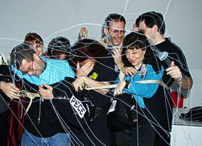

Eravamo nove amici al bar...
... che dite, lo facciamo un agguato?
credevamo di cambiare il mondo
... abbiamo anche le bombolette adatte!
Promemoria:
Bellaria: venerdì 25 maggio 2001, ore 15.00: Agguato in Sala Macchine.Si prega di portare la mascherina nera in dotazione (pece, piume, cordame vario, bombolette e forcone saranno a carico del COMMANDO).
Fase 1. Ore 15.10 circa: dopo che il gruppo insegnanti (da ora in avanti definito semplicemente GIN) sarà entrato al completo si prega di entrare in ordine sparso portando seco attrezzatura varia dissimulando una certa aria indifferente. Riteniamo altamente probabile che i GIN tentino all'inizio della riunione uno dei loro soliti depistaggi (questionari, domande patetiche, regole di primo imbarco) atti ad allontanare la nostra attenzione dal nostro sacro dovere. Secondo i dati statistici c'è il 99% delle probabilità che cerchino di farci 'bere'b una balla di proporzioni megagalattiche... al restante 1% resta sempre l'assassinio del RE DE LEONE ad opera del branco. Non vi fate sviare e resistete impavidi.
Fase 2. A circa metà della riunione, il capitano Alighieri prenderà la parola, cercando astutamente di disorientare i GIN: che cosa c'è di meglio infatti
di una bella premiazione a sorpresa?
È con vero piacere, dunque, che il nostro amico Vincenzo alias GM Da Nee - Secondo Ufficiale Scientifico e nostro salvatore per i giochi folli - sarà premiato con l'alta onorificenza della R.I.
>RAFFINATA INFORMATICA
per il grande contributo offerto alla Nave USS Afrodite, per aver inventato e continuamente aggiornato il suo sito e per il grande appoggio morale offerto al suo Capitano e al Primo Ufficiale nonché a tutti i vari ed assortiti membri dell'equipaggio (gatti e avvoltoi compresi). Hip Hip URRAÀ!!!
(NdA: il nostro amico era davvero all'oscuro di tutto e questo è stato il nostro più grande successo: riuscire a mantenere un segreto su di una nave pazzerella come la nostra!).
Fase 3. Terminata la premiazione con medaglie, diplomi e foto con dedica vi saranno alcuni minuti di falso relax in cui il gruppo dei GIN crederà di aver scampato il pericolo...
Al segnale conveniente di Frruuu (che nessuno vedrà in tempo, capitano compreso) tutto il gruppo compatto dovrà alzarsi - senza ridere - dopo aver indossato le mascherine nere e con accompagnamento di urla gagliarde dovr� circondare i GIN e avvoltolarli con il cordame appositamente portato. Molta attenzione dovr� essere fatta ai nodi � che non dovranno correre il rischio di sciogliersi: sar� meglio a questo proposito chiedere l�aiuto di un �esperto��
A questo punto e solo quando tutti i GIN saranno alla nostra merc�, la VOCE DEL COMMANDO potr� tornare a farsi sentire�.forza Frruuu !!!
�IL COMMANDO E� TORNATO: VENDETTA VENDETTA!!!
CREDEVATE DI ESSERE IN SALVO PER SEMPRE?
QUESTIONARI INUTILI,
SALTI NEL TEMPO�
BASTA CON QUESTO INUTILE SCEMPIO !!!
VOGLIAMO DI NUOVO CERCARE AVVENTURE!!!
A NOI LA GLORIA!!!
A NOI LE SVENTURE!!!
SCEGLIETE DUNQUE: QUAL PENITENZA???
LA CORDA, LA PECE, IL FORCONE , LA LENZA???
O DI MILLE COLORI LA TESTA ADORNARE???�
Sar� compito del capitano a questo punto mostrare ai GIN le bombolette spray per colorare i capelli di verde e rosso che astutamente porteremo con noi e che�decideremo all�ultimo... se usare o meno!!!
Sar� meglio portare con noi anche una vecchia bomboletta spray di coriandoli (ricordo di vecchi agguati mai dimenticati) nel caso il nostro sangue rossiccio e tenerello ci faccia provare misericordia per i malcapitati�.l�effetto non sarebbe male, in ogni modo, sapete, bianco su bianco.
A questo punto, al grido dei nostri : � COMMANDO: RITIRATA !!!� , il gruppo dovr� correre fuori della stanza � sempre possibilmente accompagnandosi con urla selvagge e botti, e � al riparo da occhi indiscreti - levarsi la maschera, nascondere l�arsenale e ritornare in tempo con aria innocente per godersi lo scioglimento dei GIN dai nodi infernali (� davvero il caso!!). Da questo momento in poi comincia l�operazione � Negacion de l�evidencia�.
Rendez-vous alla prossima riunione degli ufficiali Superiori (Roma, 7 luglio 2001) per i soliti rapporti e per la preparazione del �prossimo agguato ��.Siate puntuali.
NB: sar� opportuno allertare un fotografo ufficiale � armato e pronto al fuoco � che possa documentare e testimoniare opportunamente il �festino�.
Saranno inviati ringraziamenti ufficiali e non a tutti i partecipanti, sostenitori e vittime.

GM Buckh
Alloggio 09-B3105
USS Afrodite NCC-1863